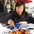

Running in San Francisco. I've been running seriously for 4 years now. As I was living in The Netherlands before coming to SF, I was used to running on flat routes and didn't get to run uphill much (except for that one sad lonely hill in the park next to my home).
Siphan Bou
February 6, 2016
Having been living in SF for about 2 weeks, I immediately felt the difference when going for a jog in my neighborhood. There are steep (I'm guessing 45° incline, if not more!) hills everywhere I go. Most of the time I'm out of breath when I reach the top (that is, the top of the block, not the actual hill). I'm really looking forward to reaping the benefits of these hill repeats.
Josh Parkin
February 5, 2016
Running on treadmills. Since I am a night owl, I prefer to run in the evening so running on a treadmill is more convenient for me as it's safer.
Sophie Rigault-Barbier
February 4, 2016
Training for San Francisco half marathon. It all started again in 2008 when I wanted to go back to sports but didn’t want to spend too much money in fitness club. Thereby I decided to challenge myself and ask a friend to train with me at running: only running shoes and fresh air – that was a good goal.
Sophie Rigault-Barbier
February 4, 2016
So I started and as I used to do competition, I decided to train for a half marathon. I ran 2 of them and had to stop for my little one. Today is a new part of challenge and hopefully I will go back to running again for the SF half marathon.

Electra Chong
February 3, 2016
Secretly running at night. Running was the type of activity I abhorred in high school. Though I admired the discipline and endurance of those who ran, I myself had no will to stomach the side stitches, aching lungs and mild nausea from prolonged running.
Electra Chong
February 3, 2016
This changed when I met Siphan and learned about her experience running marathons from her personal website, amsterunner.com. I felt we were similar in spirit, and yet she had managed so much personal growth by pushing herself. After being inspired by her, I secretly started running at night so I limit my embarrassment as a beginner. My night runs were chilly and lonesome, but worth it. NO PAIN, NO GAIN.
Marine Dejean
February 2, 2016
Running outdoors. I definitely prefer running outdoors so I can enjoy the nature. I secretly ran the Paris marathon but don't tell anyone.
Steven Garcia
February 1, 2016
Staying fit while preventing injuries. I used to run cross-country races with distances up to 10 miles. Unfortunately, I suffered a knee injury and I've been really careful about my training ever since. I recently picked up running again but have to build up slowly so as to ease the impact on my knees.
Rona Chong
January 22, 2016
I actually don't like running, but my sister has been sneaking out to run at night and as I'm a competitive person this has given me the courage to pick up running too. I just want to be buff.